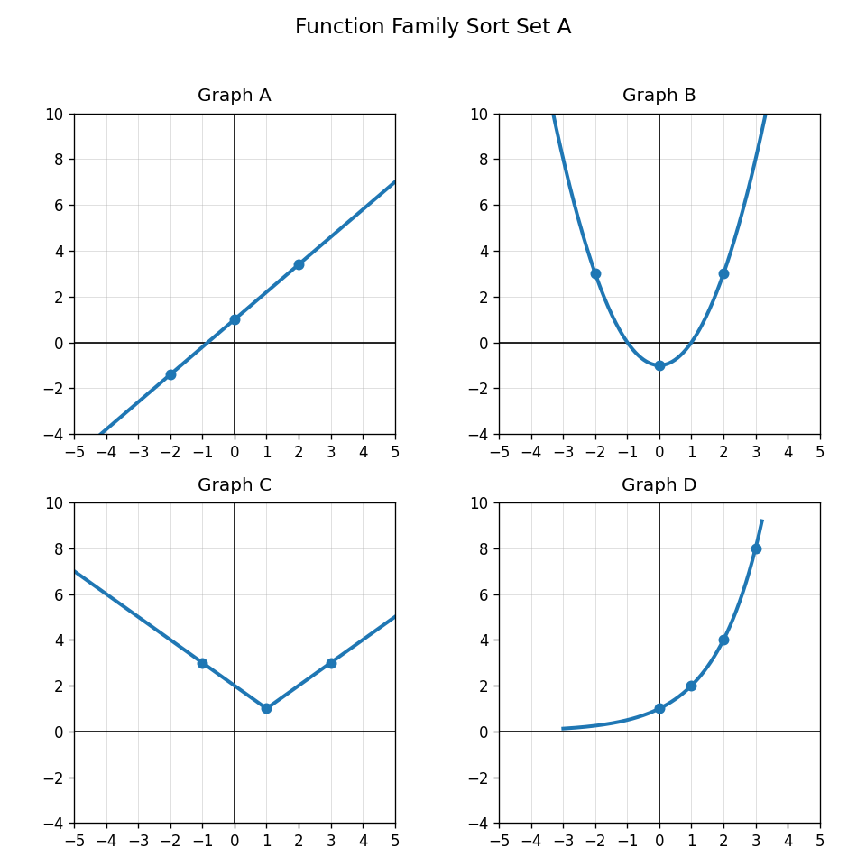
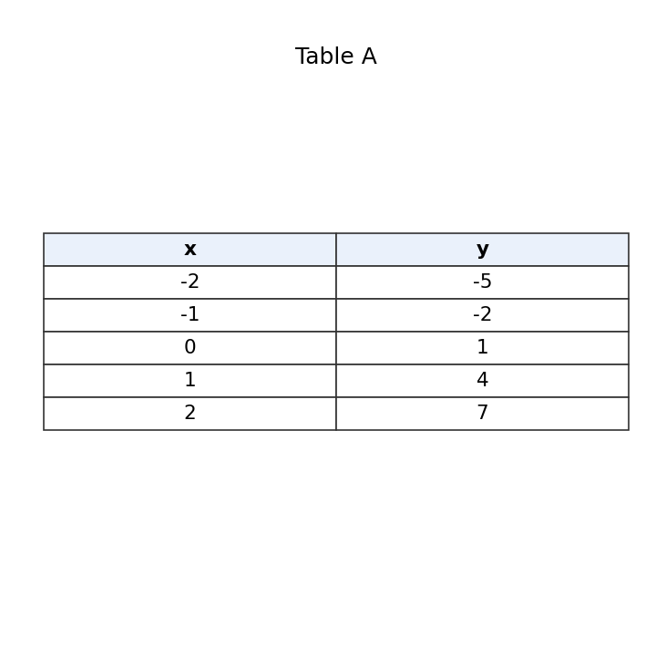
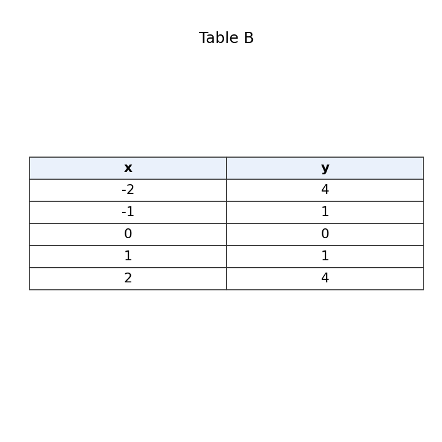

Use Sort Set A. Classify Graphs A, B, C, and D by function family.

Classify each equation by family.
Use Tables A and B. Which table is linear and which is quadratic? Explain using differences.


Compare a linear function and an exponential function. How can a table help you tell them apart?
What does it mean for a point to satisfy all constraints?
How many boundary lines are needed for this system?
$$y\le x+5$$
$$y> -x+3$$
In the system above, which boundary line should be dashed?
What is the first step to check whether $(1,4)$ is a solution to a system of inequalities?
Determine whether $(1,4)$ satisfies both inequalities.
$$y\le x+5$$
$$y> -x+3$$
If a point is outside one of the shaded regions, what does that tell you about the system?
Explain why the overlap of two half-planes can be a region instead of a single point.
A club has at most 80 dollars and needs at least 12 items. Write a system of inequalities that could model the situation.
What does the symbol $\le$ tell you about the boundary line?
Rewrite $2x+y\le 8$ by solving for $y$.
Write an inequality for: a student can spend no more than 40 dollars.
A student graphs $y>5$ with a solid horizontal line. Identify and correct the error.